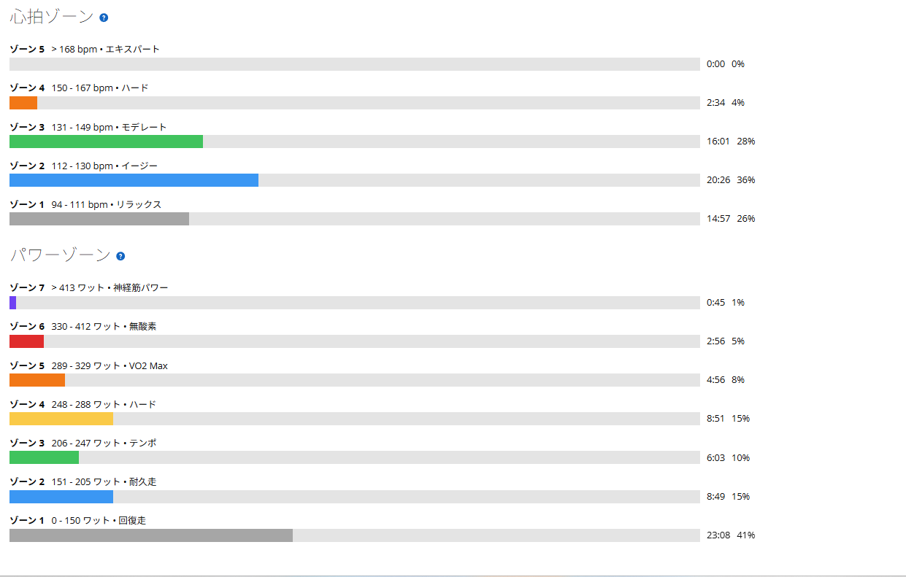

回復走のつもりが踏みすぎた。それでも明日のゴルビーはやる
昨日は唐沢で30秒ON／30秒OFF。今日は明日のゴルビーへ向けて軽く整えるはずだった。外を走るにしても回復走より少し上のベース走、唐沢を使うにしてもテンポ程度。そのつもりで出発した。
それが終わってみればNP227W、IF0.827、TSS62.7。唐沢は1本目246W、2本目265W。帰りの長いストレートに至っては2分15秒を371Wで走っていた。最後のはしっかり踏んでいたが、山はそこまで踏んでいる感覚がなかった。この体感と数字のズレをどう見るかという話である。

21.29km・NP227W・TSS62.7
- 全体21.29km / 55分31秒 / 獲得317m
- 負荷平均163W / NP227W / IF0.827 / TSS62.7 / 最大576W
- 心拍・回転平均122bpm / 最大159bpm / 平均83rpm / 左右52％：48％
- 環境平均28.5℃ / 最高31.0℃ / 推定発汗728ml
- 効果有酸素TE3.0 / 無酸素TE0.2（Garmin判定はベース）
Garmin上の判定は「ベース（低強度有酸素）」。平均心拍122bpm、無酸素TEも0.2なので、心肺としては確かに追い込んでいない。ところがパワーを見ると、明らかに強い区間がいくつも混ざっている。
唐沢1本目、9分58秒で246W
- ラップ2（唐沢1本目）9分58秒 / 平均246W / NP262W / 心拍137〜156bpm / 80rpm
FTP設定275Wに対して246Wは約89％。テンポの上限からSSTに入っている領域である。抑えて登るつもりだったので、回復走としては少し強い。
ただ心拍は平均137bpmで、呼吸が乱れるほどでもない。体感としても余裕があった。この時点では「まあ少し踏んだかな」くらいの認識だった。問題はこの後である。
唐沢2本目、7分03秒で265W。もう回復走ではない
- ラップ4（唐沢2本目）7分03秒 / 平均265W / NP266W / 心拍140〜155bpm / 80rpm
265WはFTP設定の約96％。これはもう回復走ではなく、ほぼ閾値走である。それでも、自分では強く踏んだ感覚がなかった。
最近の外ライドでは、低回転でも上半身と下半身を力ませず、骨盤を安定させて踏む感覚が少しずつ分かってきた。重いギアを踏み潰すのではなく、身体全体で自然にトルクを乗せる。その動きがうまくいった結果、体感より出力が高く出た可能性はある。悪い変化ではない。ただし楽に感じるからといって、身体への負荷まで軽いとは限らない。ここは今後もっと注意して見る必要がある。
帰りのストレートで2分15秒・371W
- ラップ6（帰りのストレート）2分15秒 / 平均371W / NP361W / 最大557W / 心拍143〜159bpm / 84rpm / 平均47.4km/h
75kg換算で4.95W/kg。昨日から言っていた「5倍付近へ触れる」という意味では、これ以上ないほど分かりやすい。しかも30秒ではなく2分以上である。
昨日の30/30はTSS100を超えても体感がぬるかった。それが今日は、予定にも入っていない帰り道で5倍付近を2分以上踏んでいる。ゴルビー前日のオープナーとしては明らかにやりすぎである。今の乗り方で目いっぱい踏んだらどうなるかという好奇心には勝てなかった。
心拍は軽いのに、脚には入っていた
ゾーンを見ると、今日の体感と数字のズレがはっきりする。
心拍はゾーン5が0秒、ゾーン4も2分34秒（4％）。ゾーン3が16分01秒（28％）で、ゾーン2以下が62％を占める。心拍だけを見れば、全体としては確かにベース寄りだ。
一方でパワーは、ゾーン7が45秒、ゾーン6が2分56秒、ゾーン5が4分56秒。ゾーン5以上を合計すると8分37秒になる。ゾーン4も8分51秒あった。心肺は上がり切っていないのに、脚では何度も高い出力を出している。だから終わった直後の体感は軽い。ただし明日のゴルビーに影響が出る可能性は残る。今日は「心肺的には軽いが、脚には刺激が入った日」だった。

昨日と今日で、2日合計164.1TSS
昨日の30/30がTSS101.4、今日が62.7。2日で164.1になった。数字だけ見れば、それなりの負荷である。
それなのに昨日はぬるく感じ、今日も唐沢もストレートも以前よりは苦しくなかった。ここでひとつ疑問が出てくる。この状態でも明日のゴルビーを5本きれいに揃えられるなら、以前より練習耐性が上がっているのではないか。連日の負荷を処理する力が付いてきたなら、もう少し練習をハードにしてもよいのではないか。半分は正しい気がする。ただ、残り半分は明日以降を見ないと分からない。
明日のゴルビーは予定どおりやる。ただし目的は更新ではない
明日は友人と一緒に走るので、そもそも中止という選択肢がない。予定どおり5分×5本をやる。ただし目的は最高値の更新ではなく、この2日間の負荷を抱えた状態で5本をどれだけ揃えられるかを見ることだ。
- 目標1〜2本目330W前後 / 3本目328〜332W / 4本目325〜330W / 5本目325W以上
- レスト各5分
- 揃い方1本目と5本目の差を15W以内に
前回は348W、339W、333W、323W、317Wで、1本目から5本目まで31W落ちた。明日は1本目で飛ばさない。友人と一緒だとどうしても最初から上げたくなるが、今回は競争ではなく確認作業である。最初の2分を330W前後に抑えて、そこから5分をまとめる。
そして5本終えたからといって、その場で「もっと練習を強くしてよい」とは決めない。見るのは完遂の有無だけではなく、5本の平均と落ち幅、4本目5本目のフォーム、膝や足首や腰の違和感、練習後の疲労感、その日の食欲と睡眠、翌朝の脚、翌日に軽く回して戻るかどうか。ここまで含めて判断する。5本揃っても翌日に完全に潰れているなら、出力は出せても回復が追いついていないということだ。逆に5本を揃えてフォームも崩れず翌日の回復も良ければ、耐性が上がっている可能性はかなり高い。
上げるとしても、一つずつ
仮に耐性が上がっていたとしても、全メニューを同時に強くするのは違うと思う。まずは今の強度を安定して繰り返すのが先だ。長い実走高強度では太平・琴平・唐沢を後半まで揃える。60/60では365〜380Wを2登坂で安定させる。ゴルビーでは330W前後を5本並べる。
それが2〜3週続いて回復にも問題がなければ、そこで初めてどれか一つを上げる。60/60を2登坂から3登坂へ、ゴルビーを330Wから335Wへ、火曜か木曜にSSTを足す、長い実走の後半出力を少し上げる。どれか一つだけである。今の私に必要なのは毎回最大値を更新することではなく、高い水準を繰り返せる回数を増やすことだと思っている。
今日やってみて思ったこと
今日は軽く走るつもりだった。それでも唐沢2本目は265W、帰りのストレートは2分15秒で371W。以前ならこれだけ踏めば「かなりやった」という感覚が残ったはずだが、今回はまぁまぁ…。
身体の使い方が良くなったのか、高出力に慣れてきたのか、単にその場で疲労を感じにくかっただけなのか。答えは明日以降に出る。明日5本を揃えられるか、その後どう回復するか。そこで初めて、練習をもう少しハードにしてよいか判断できる。今日の時点で踏みすぎた可能性はあるが、それを明日をやめる理由にはしない。無理や根性を確かめたいのではなく、連日の負荷を処理しながら出力を安定させる力が本当に上がっているのかを見たい。
次に見るポイント
- ゴルビー5本を325〜335Wで揃えられるか。1本目を飛ばさず入れるか。1本目と5本目の差を15W以内に
- フォーム4本目5本目でも上半身を力ませずに踏めるか
- 身体膝・足首・腰に違和感が出ないか。練習後から翌日にかけて回復できるか
- 判断今回の連日負荷が一時的な好調なのか、耐性が上がったのか
- 次の一手負荷を上げるなら、どのメニューを一つだけ上げるか
明日の結果で次の段階へ進めるかを決める。今日は結果として、そのための予定外の前日刺激になった。踏みすぎたとも言えるし、ちょうどいい実験条件が揃ったとも言える。後者だと思っておく。